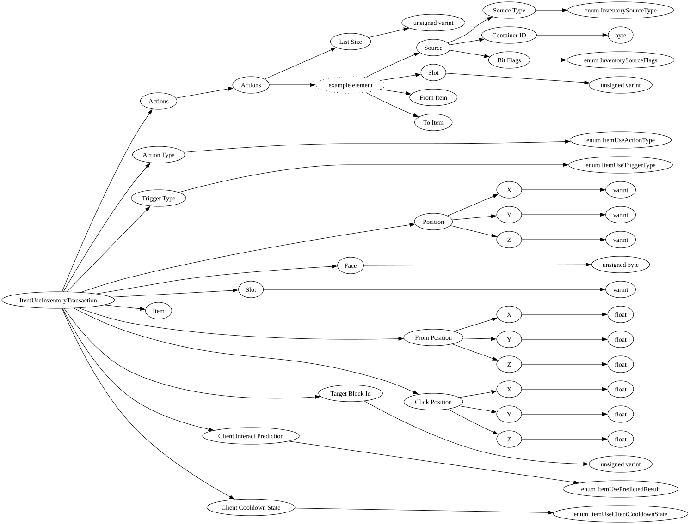

| Field Name | Field Type | Field Constraints | Field Notes |
|---|---|---|---|
| Actions | InventoryTransaction | Base inventory actions. Lists the inventory slot changes associated with this transaction. | |
| Action Type | enum ItemUseActionType | The type of item use action performed. | |
| Trigger Type | enum ItemUseTriggerType | PlayerInput if a direct result of the player's initial button input. SimulationTick if the player is holding down input from a previous tick. | |
| Position | BlockPos | The position of the target block. | |
| Face | unsigned byte | <div style="padding-left: 0px;">Minimum = 0<br>Maximum = 255</div> | The face of the target block that was clicked. |
| Slot | varint | The inventory slot of the item being used. | |
| Item | NetworkItemStackDescriptor | The item stack descriptor of the item being used. | |
| From Position | Vec3 | The player's position when this transaction was sent. | |
| Click Position | Vec3 | The position within the target block face that was clicked. | |
| Target Block Id | unsigned varint | <div style="padding-left: 0px;">Minimum = 0</div> | The runtime block state ID of the target block. |
| Client Interact Prediction | enum ItemUsePredictedResult | Whether the client predicted the interaction would succeed. | |
| Client Cooldown State | enum ItemUseClientCooldownState | Whether the item is currently on cooldown on the client. |